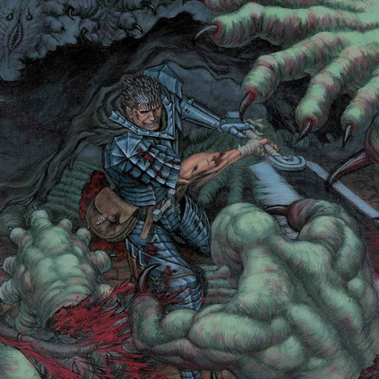

Arco 5 - Fantasia
A história segue Guts e seus camaradas após o Grande Rugido do Mundo Astral causado por Griffith. A bordo do Seahorse, Guts e seu grupo zarparam para a ilha mística de Elfhelm para buscar conselho com o Rei dos Elfos, que poderia restaurar a sanidade de Casca. Este Arco vai do capítulo 308 ao presente.
Leia o Mangá Online